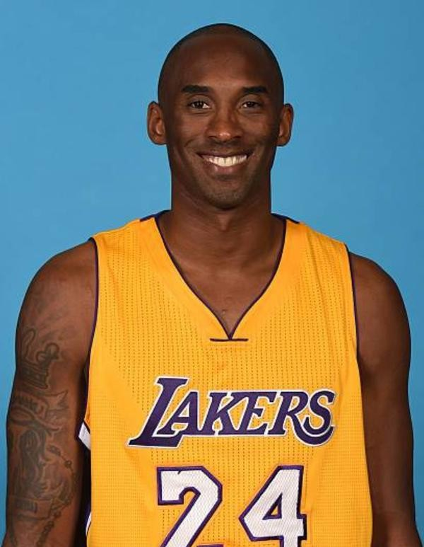
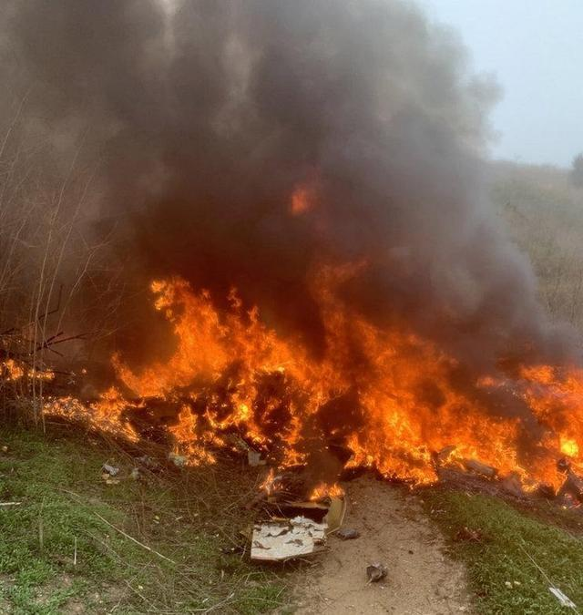
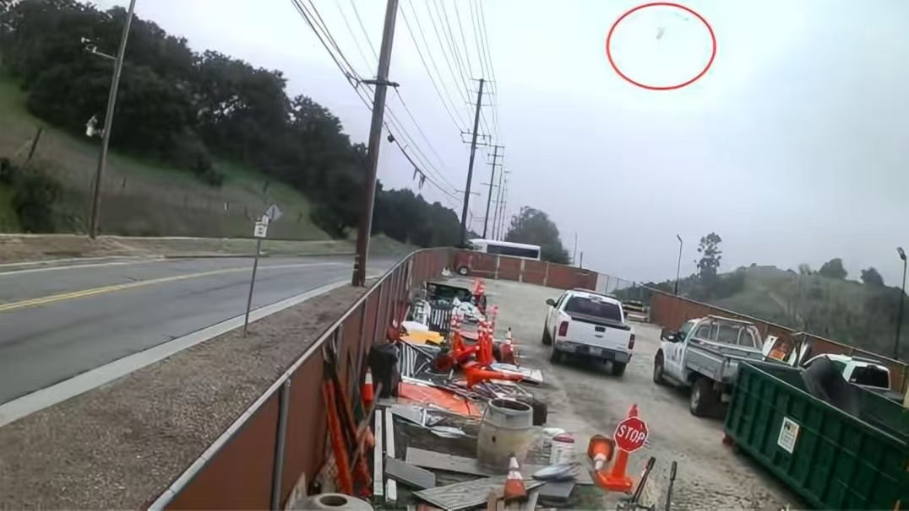
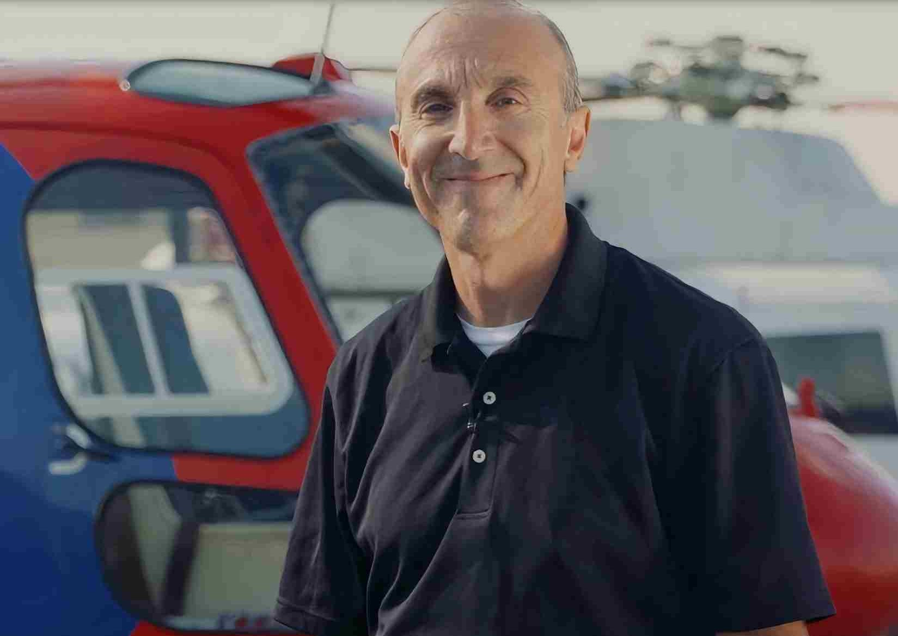
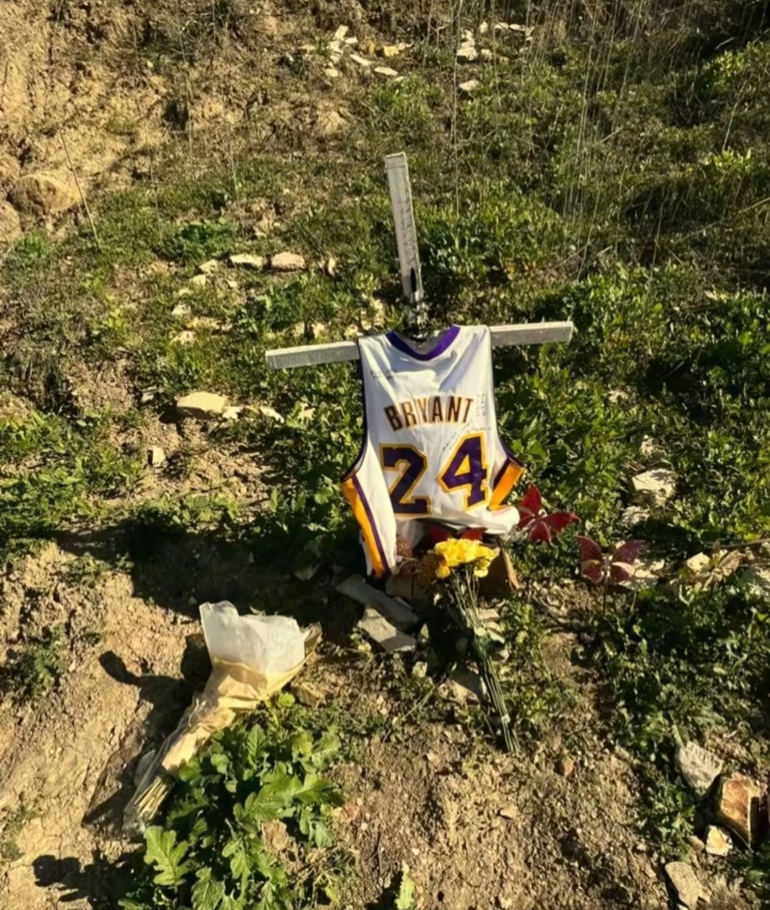
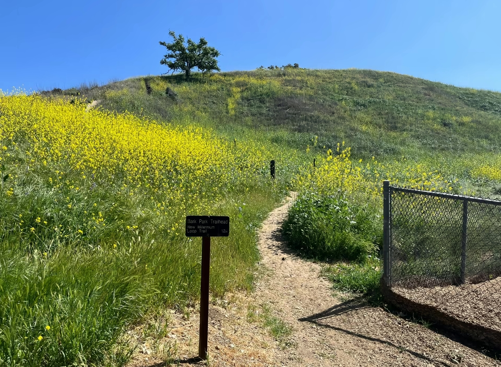
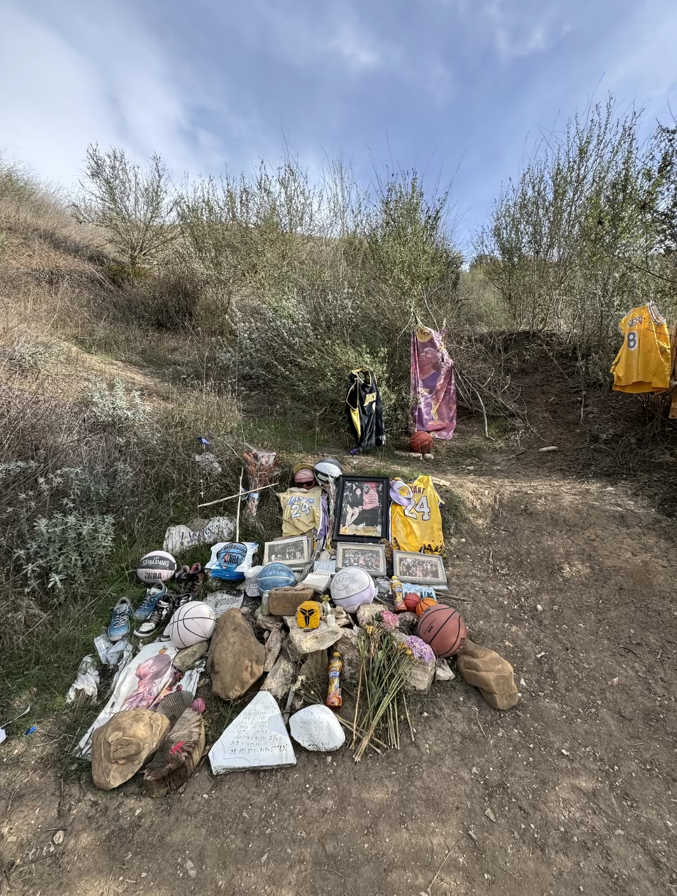
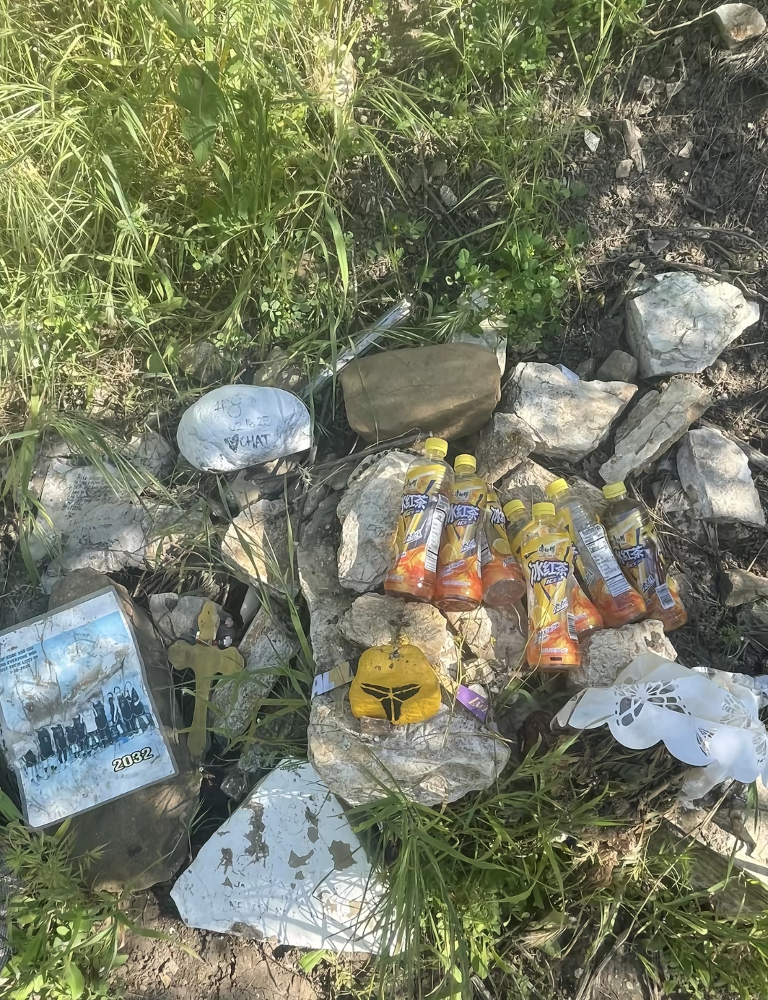

崔鑫-3025004442 数据新闻
2020年1月26日，科比·布莱恩特与女儿吉安娜等九人因直升机坠毁事故遇难。消息传来，无数人第一反应是拒绝相信。媒体上最先涌出的是“不是真的”，随后才是漫长的沉默与泪水。
在洛杉矶，球迷从下午聚集到深夜。有人放下鲜花、球衣和篮球，有人只是站在那里，抬头望着球馆穹顶上退役的8号和24号球衣。那一夜，整座城市被紫色与金色的灯光覆盖。费城亮起了同样的颜色——那是科比出生的城市。米兰街头出现了巨幅壁画，中国球迷在凌晨守候，将8号和24号刷满屏幕。没有统一的指令，却有相同的感受：科比不只是篮球运动员，他是关于偏执、热爱与凌晨四点的代名词，是许多人青春里最硬的骨头。
公众很容易将其归结为某一次的坏运气，但调查揭示了一条更值得警惕的过程链。起飞时，洛杉矶警署因天气不佳已停飞直升机，而科比的航班仍在任务压力下按计划起飞。在伯班克空域的12分钟盘旋等待，看似常规，却打乱了节奏，增加了飞行员的认知负担。进入卡拉巴萨斯山区后，低能见度让外部视觉参考消失，经验丰富的飞行员陷入“空间迷向”——内耳感知与仪表数据冲突，他以为在爬升，实际却在高速下降。更关键的是，这架直升机缺少飞行数据记录器、驾驶舱语音记录器和地形预警系统。缺少这些设备，意味着事故前少了一层自动预警的防线，事故后失去了精准回溯与学习教训的能力。
风险从来不是由一个节点造成的。任务压力、空域等待、天气恶化、生理极限、设备缺口——它们各自都不致命，但在42分钟内依次叠加，迅速压缩了所有纠偏空间。这场事故值得被反复审视，不只是因为逝者足够重要，更是因为它揭示了一个普遍的真相：在高风险系统中，安全不是某个人的技术问题，而是整个系统的配置问题。
缅怀科比，不只是记住后仰跳投和81分之夜，也是从他离去的方式中，学会更清醒地面对安全、责任与生命的边界。斯台普斯中心的灯光终会熄灭，但那些被这场事故推动去反思、去修补系统缺口的人，会把这份意义延续下去。

科比坠机事件从起飞到坠毁约42分钟，若只看最后一刻，很容易归因为“突发故障”或“操作失误”，但将时间线展开就会发现，风险是在多个节点上逐步累积的。
起飞决策本身就是一个预警信号——当天天气恶劣，洛杉矶警署的直升机部队已因此停飞，但科比的航班仍按计划起飞，任务压力压过了安全评估。随后在伯班克空域，因交通繁忙，直升机盘旋等待了约12分钟。这看似常规，却打乱了飞行节奏，增加了飞行员的时间压力和认知负担，同时飞行员在此期间申请“特殊目视飞行规则”许可，暗示天气条件已处于边缘状态。
进入卡拉巴萨斯山区后，低能见度使飞行员失去外部视觉参考，随即陷入“空间迷向”——内耳感觉与仪表读数发生冲突，他错误地认为飞机在爬升，而实际正在高速下降。最终直升机以近300公里的时速撞山。
说明：公开资料中常见 09:45 / 09:47 两种分钟表述，本文统一用区间表达以减少误导。
在事故报道中，零散的参数常让读者难以把握全貌。本页将四个关键数据——目标爬升高度、实际最大高度、撞击速度与残余燃油——作为一条完整过程链的标记点来并置呈现。
飞行员报告的目标爬升高度是4000英尺，目的是飞越云层进入目视飞行条件。但实际最大高度仅为2300英尺，始终未能突破云层。这近1700英尺的显著偏差表明，直升机从未进入预期的安全飞行状态。紧接着，撞击速度（约298公里/小时）与残余燃油（约800磅）共同揭示了事故瞬间的物理状态：飞机以极高的动能撞向地形，并引发了剧烈火灾。这意味着，飞行员在失去对外部环境的视觉参考后，不仅未能建立安全高度，甚至在撞击前都未能有效降低速度或消耗燃油。
这四个数字串联起来，指向一个清晰的结论：从高度偏差出现的那一刻起，纠偏的窗口便已迅速收窄，并在短时间内彻底关闭。
在科比坠机事件的讨论中，飞行员的经验常被用作判断安全性的核心依据。但关键逻辑是：经验能提升应对能力，却无法消除人类感知系统在特定环境下的固有局限。
当直升机飞入能见度极低的云层，并穿行于复杂山地上空时，飞行员赖以判断姿态的外部视觉参考会迅速消失。此时，大脑主要依赖前庭系统感知平衡，而这一系统极易产生错觉——即“空间迷向”。在这种状态下，即便是数千小时经验的飞行员，其内耳感受到的“爬升感”也可能与仪表盘的真实数据截然相反。这不是技术或经验的问题，而是生理感知的硬性边界。
因此，把事故原因单纯归于飞行员的某个操作，或某一种单一因素，都难以解释全局。更接近事实的理解是：恶劣的天气与复杂地形构成了高风险环境；在任务压力下作出的起飞与继续飞行决策将直升机推入了这一环境；而机载设备缺乏地形预警系统，则未能为飞行员提供最后一道警示。环境、决策、设备、人的生理极限，这几个环节共同咬合，形成了一条无法靠个体经验打断的系统性风险链条。只有看到这种多重因素的叠加，才能真正理解这场事故为何发生。
| 因素 | 在本事件中的表现 | 作用方向 |
|---|---|---|
| 天气/能见度 | 低云低能见度 | 增加视觉参考缺失 |
| 地形 | 山区环境 | 提升航迹管理难度 |
| 空域运行 | 等待与转场 | 增加任务节奏压力 |
| 认知负荷 | 连续判断 | 压缩纠偏窗口 |
在科比坠机事件中，一个被反复讨论的技术细节是：那架西科斯基S-76B直升机缺少三项关键设备——飞行数据记录器（FDR）、驾驶舱语音记录器（CVR）和地形感知与警告系统（TAWS）。这三项设备的缺失，恰恰与上文提到的“系统性风险链条”直接相关。
FDR和CVR通常被称为“黑匣子”，它们的作用并非阻止事故，而是在事故发生后提供“可追溯”和“可解释”的能力：飞行参数与驾驶舱对话能帮助调查人员还原飞行员在最后时刻看到了什么、操作了什么、听到了什么指令。而TAWS则是一种主动防御工具，当地形逼近时发出警报，提供“可预警”的能力。科比的直升机缺少这三者，意味着在飞行过程中，少了一层自动化的风险提醒；在事故发生后，调查团队只能依赖雷达数据和地面监控图像拼凑碎片，难以精准还原飞行员的认知状态与操作意图。。
这正是本事件在航空安全界持续引发讨论的深层原因：安全治理不能只依赖飞行员个人的技术与经验，更需要将其视为一个系统配置问题。缺失记录与预警设备，不仅压缩了事故前的纠偏窗口，也增加了事故后学习教训的难度。科比的悲剧并非孤例，它提醒所有人：当系统存在缺口时，即便最优秀的飞行员，也可能在环境与生理的夹缝中失去最后一道防线。
| 设备 | 理想配置 | 涉事机（报告描述） | 影响 |
|---|---|---|---|
| FDR | 有 | 无 | 飞参追溯受限 |
| CVR | 有 | 无 | 决策语境难还原 |
| TAWS | 有 | 无 | 地形预警能力不足 |
科比遇难火场照片及地面监控相关画面


左：ALERTWildfire 9:44 PST 相关画面；右：地面监控相关画面。

Ara Zobayan 是执业商用直升机飞行员，长期从事包机与商务飞行任务，主要服务于南加州区域航线。
说明：以上为公开资料中常见的经验性描述，用于背景介绍，不替代官方执照档案与完整履历文件。
2020年1月26日的消息传来时，很多人第一反应是拒绝相信。社交媒体上最先出现的是震惊和问号，随后才被漫长的沉默与哭泣取代。洛杉矶斯台普斯中心外，球迷自发聚集，有人摆放鲜花、科比球衣和篮球，有人只是站在那里仰望球馆上空的退役球衣。那一夜，紫色和金色的灯光照亮了整座城市，仿佛在回应一个时代骤然消失的裂响。
全世界球迷以各自的方式完成告别。费城（科比的家乡）市政厅点亮了紫金灯光，意大利米兰的街头出现了手绘的巨幅壁画，中国球迷在凌晨守候直播，将8号和24号刷满了网络屏幕。没有统一的仪式，却有着共同的感受——他不仅仅是篮球运动员，更是许多人青春里关于努力、偏执与热爱的象征。




这场事故不只是一场令人心碎的意外，更是一面镜子，照出了我们理解复杂事件时的盲点。公众很容易将它归因为某一次失误或某一刻的坏运气，但如果把时间线拉长，会发现风险早已在起飞决策、空域等待、低能见度飞行和缺失的设备中层层叠加。科比和吉安娜的离去令人痛心，而更深层的遗憾在于，那些被忽略的系统缺口，原本有机会被补上。缅怀的意义，不只是记住一个人曾如何活着，也包括从他离去的方式中，学会更清醒地面对安全、责任与生命的边界。